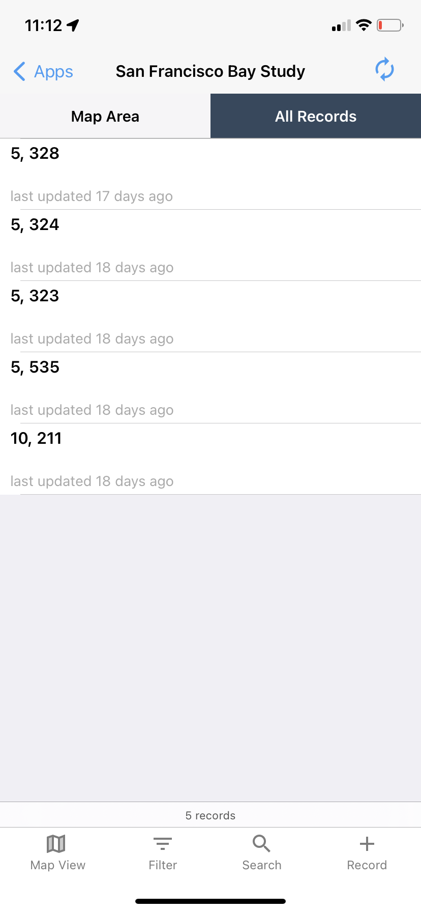
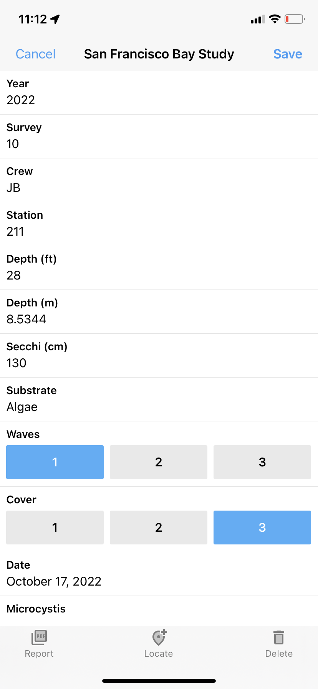
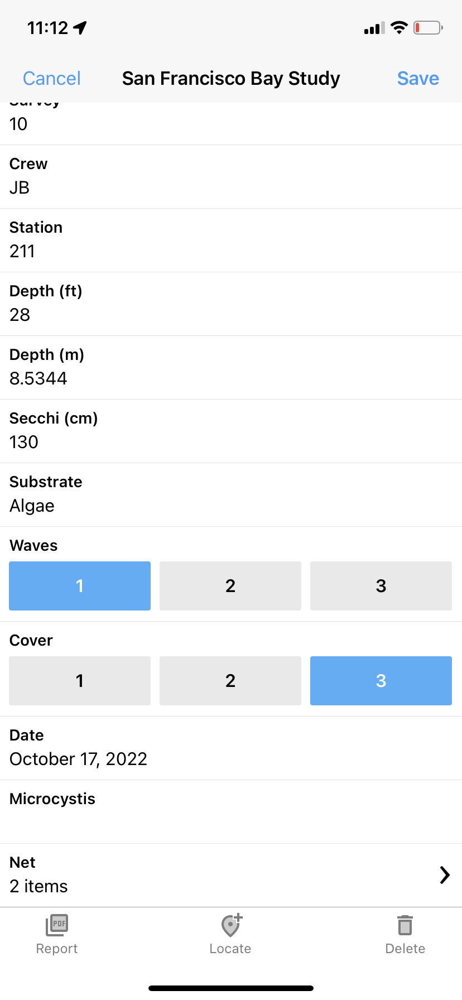
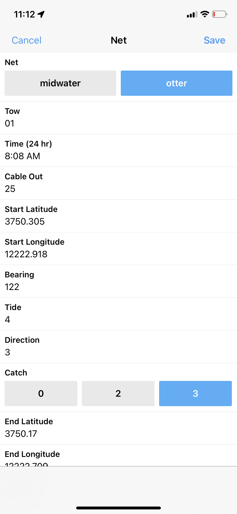
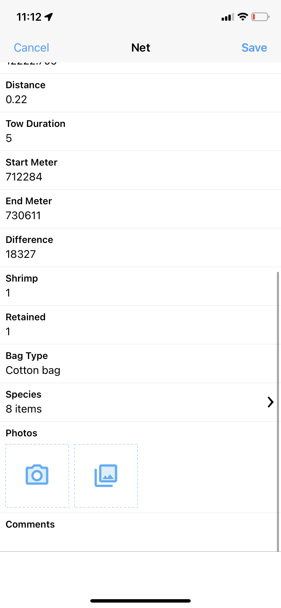
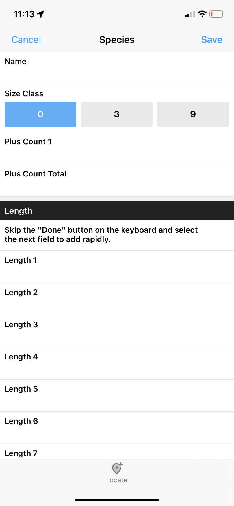
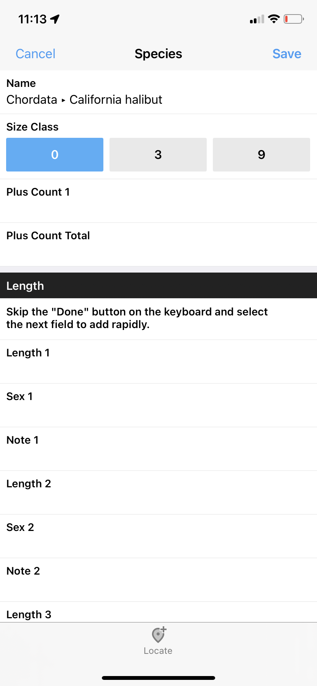
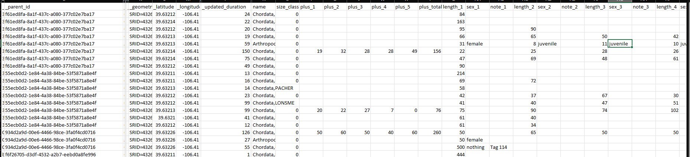

16 SF Bay Study: Fulcrum Trial App

Figure 13.1: Screen capture of a test Fulcrum app developed for SFBS survey.

Figure 13.2: Screen capture of a test Fulcrum app developed for SFBS survey.

Figure 13.3: Screen capture of a test Fulcrum app developed for SFBS survey.

Figure 13.4: Screen capture of a test Fulcrum app developed for SFBS survey.

Figure 13.5: Screen capture of a test Fulcrum app developed for SFBS survey.

Figure 13.6: Screen capture of a test Fulcrum app developed for SFBS survey.

Figure 13.7: Screen capture of a test Fulcrum app developed for SFBS survey.

Figure 13.8: Screen capture of a test Fulcrum app developed for SFBS survey.